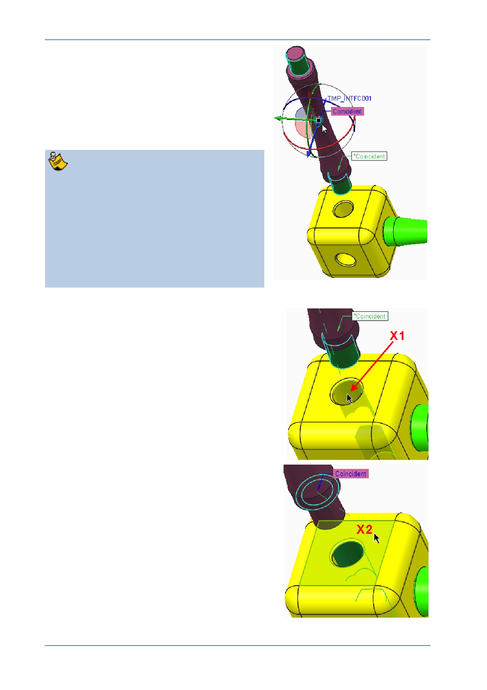

PTC Academic Program
3. Before selecting assembly references, use
the 3D dragger to reorient the strut:
Click and drag the blue ring of the 3D
Dragger so that the end of the strut with the
*Coincident constraint tag is facing down.
Click and drag near the small sphere at the
center of the 3D Copilot to move the strut
above the corner cube.
How the 3D Dragger works:
Dragging an arrow moves the model along
the axis of the arrow.
Dragging a circle rotates the model about
the axis of the same colored arrow.
Dragging the small sphere at the center
will drag the model in the plane of the
screen.
4. Selecting assembly references from the
corner cube:
Click to select the cylindrical surface of the
hole X1 on the corner cube.
The strut will shift slightly to make the two
cylindrical surfaces coincident.
Click to select the top flat surface of the
corner cube X2 .
The strut will move until the shoulder of the strut
is coincident with the top of the cube and it will
change to a yellow-orange color, indicating that
it is fully constrained
© 2012 PTC
Creo Parametric 2.0 Primer
Page 78